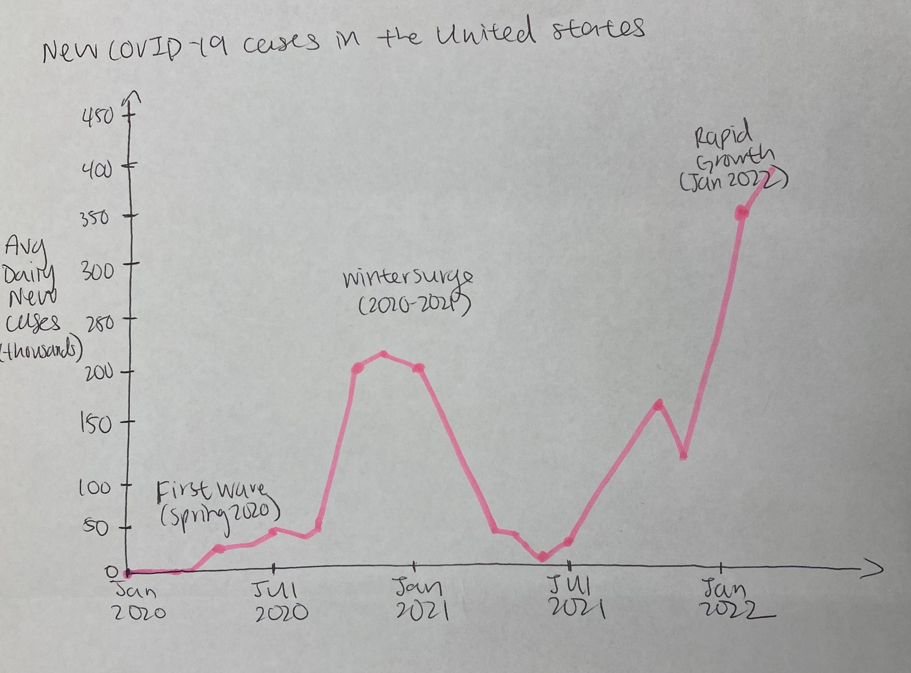
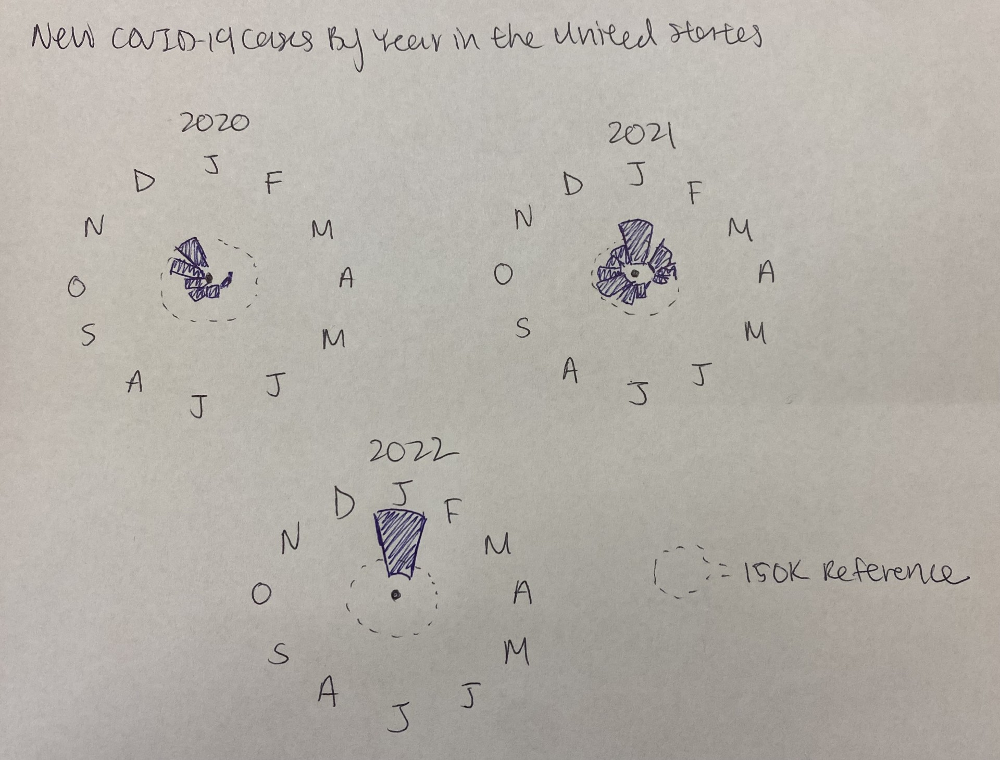
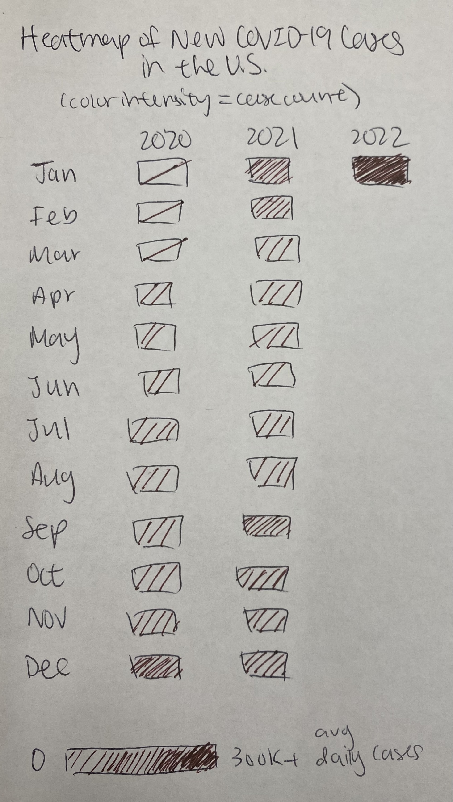
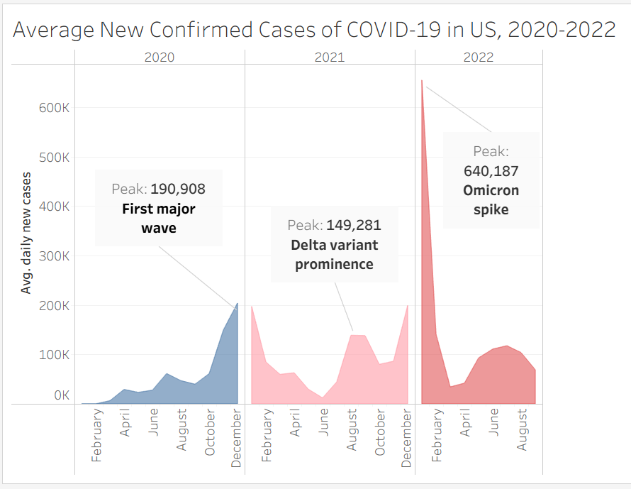

Its greatest strength is the seasonal stacking. By looping each year around the same calendar positions, it makes the recurring winter surges immediately intuitive without requiring the reader to explicitly compare across years. The dramatic spike bursting off the top of the chart is also powerful. It communicates the sheer scale of that wave in a way a standard line chart might not, and feels appropriate for an opinion piece trying to convey urgency rather than precision. The minimalist labeling (just a few month anchors, year markers, and a single legend item) keeps the design uncluttered, and the muted pink palette is easy on the eye while still conveying something alarming.
However, the design has some meaningful readability costs. The width encoding for case counts is harder to decode than a standard position-on-axis encoding. The 150K legend marker is hard to follow, and thin bands (representing lower but still significant case counts) are nearly impossible to quantify, making it difficult to compare. The 7-day average line is labeled but never explained, which may leave general readers, the likely audience for an NYT opinion piece, unsure what it means or why it differs from the shaded band. The spiral structure also demands a degree of visual literacy, since readers must consciously trace the path to orient themselves by year and month, and there's no clear visual entry point guiding where to start reading.




The goal of this visualization is to communicate how the severity of COVID-19 surges escalated dramatically over time in the United States, culminating in the Omicron wave of early 2022 which dwarfed every prior peak. To tell this story clearly, I chose an area chart with the date on the x-axis and average daily new confirmed cases on the y-axis, aggregated to the monthly level. Monthly aggregation was a deliberate choice, since it smooths out the noise of day-to-day reporting inconsistencies while still preserving the shape and timing of each major surge. The chart is faceted by year into three panels, which serves two purposes. It eliminates the visual clutter of a single continuous timeline and allows the reader to compare the same seasons across years at a glance. A consistent pink-to-red color family was chosen intentionally to evoke both alarm and a sense of escalation, with 2020 rendered in a cooler blue to signal the "before" era and 2021–2022 in increasingly saturated reds. Direct annotations on each peak label the surge by name and provide the exact average daily case count, so readers can quantify the comparison without needing to read off the y-axis themselves. One tradeoff of this design is that monthly aggregation obscures within-month variation — for instance, the Omicron spike was even more extreme at its single-day peak than the monthly average suggests, meaning the chart actually understates how sharp that surge was.
This redesign directly addresses several of the critiques I raised about the original spiral visualization. The biggest issue, that band width is a hard encoding to decode compared to just reading a y-axis, is fixed here since readers can now actually see and compare the peak values across surges. The jargon-y "7-day average" label is gone, replaced with plain language, and the direct annotations mean you don't need to already know when Delta or Omicron happened to understand the chart. However, there were tradeoffs. The thing the spiral actually did really well, with stacking the same months across years so you could immediately see that winters were always the worst, is somewhat lost in the panel layout, since you have to consciously look across three separate charts to notice that pattern rather than it just hitting you visually. Making the chart easier to read precisely meant giving up some of the "aha" moment that the spiral delivered. So while I think this design is cleaner and more honest than the original, it's a tradeoff.